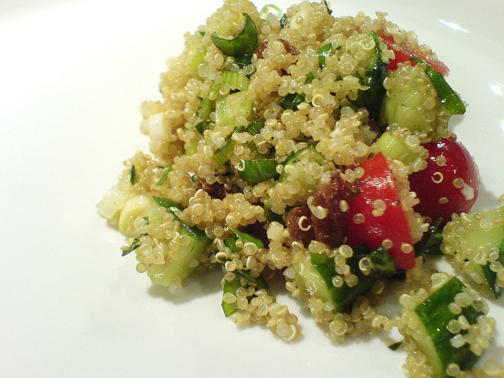

LIBRO DE RECETAS SALUDABLES
En esta página web vas a poder encontrar tres recetas que serán ideales para poder llevar una dieta sana y equilibrada.
¡¡No tienes excusa para no hacerlas, son muy sencillas!!
Solo necesitas prepararlas y disfrutar :)
Aquí hay una tabla que te indica el tiempo y la dificulta de éstas.
| RECETA | DIFICULTAD | TIEMPO |
|---|---|---|
| Receta 1 | Media | 45 minutos |
| Receta 2 | Media | 30 minutos |
| Receta 3 | Fácil | 5 minutos |
RECETAS:Para acceder hacer clic en la imagen.
«Poke Bowl» por Mike Saechang está bajo la licencia CC BY-SA 2.0 |
 «So this is quinoa» por dan mogford está bajo la licencia CC BY-NC-SA 2.0 |
 «Smoothie» por fd está bajo la licencia CC BY-NC 2.0 |